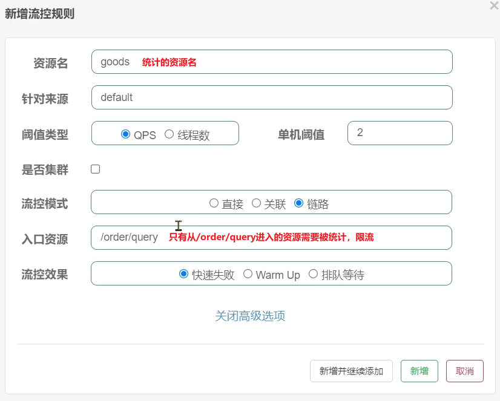

高级篇包含微服务保护(流量控制，系统保护，熔断降级，服务授权)、分布式事务、多级缓存、Redis集群、可靠消息服务
 |
|---|
 |
1.微服务保护
①初识Sentinel
❶雪崩问题及解决方案
什么是雪崩问题？
微服务中，服务间调用关系错综复杂，一个微服务往往依赖于多个其它微服务。如果微服务调用链路中的某个服务故障，引起整个链路中的所有微服务都不可用，则称为雪崩。
解决雪崩问题的常见方式有四种：
超时处理：设定超时时间，请求超过一定时间没有响应就返回错误信息，不会无休止等待。
舱壁模式：限定每个业务能使用的线程数，避免耗尽整个tomcat的资源，因此也叫线程隔离。
熔断降级：由断路器统计业务执行的异常比例，如果超出阈值则熔断该业务，拦截访问该业务的一切请求。
流量控制：限制业务访问的QPS（Query Per Second：每秒处理请求数），避免服务因流量的突增而故障。
流量控制是对服务的保护，避免因瞬间高并发流量而导致服务故障，进而避免雪崩。是一种预防措施。
超时处理、线程隔离、熔断降级是在部分服务故障时，将故障控制在一定范围，避免雪崩。是一种补救措施。
换句话说：
如何避免因瞬间高并发流量而导致服务故障？流量控制
如何避免因服务故障引起的雪崩问题？超时处理、线程隔离、降级熔断
❷服务保护技术对比
在SpringCloud当中支持多种服务保护技术，早期比较流行的是Hystrix框架，但目前国内实用最广泛的还是阿里巴巴的Sentinel框架，这里我们做下对比：
| Sentinel | Hystrix | |
|---|---|---|
| 隔离策略 | 信号量隔离 | 线程池隔离/信号量隔离 |
| 熔断降级策略 | 基于慢调用比例或异常比例 | 基于失败比率 |
| 实时指标实现 | 滑动窗口 | 滑动窗口（基于 RxJava） |
| 规则配置 | 支持多种数据源 | 支持多种数据源 |
| 扩展性 | 多个扩展点 | 插件的形式 |
| 基于注解的支持 | 支持 | 支持 |
| 限流 | 基于 QPS，支持基于调用关系的限流 | 有限的支持 |
| 流量整形 | 支持慢启动、匀速排队模式 | 不支持 |
| 系统自适应保护 | 支持 | 不支持 |
| 控制台 | 开箱即用，可配置规则、查看秒级监控、机器发现等 | 不完善 |
| 常见框架的适配 | Servlet、Spring Cloud、Dubbo、gRPC 等 | Servlet、Spring Cloud Netflix |
❸Sentinel介绍和安装
1.介绍
Sentinel是阿里巴巴开源的一款微服务流量控制组件。官网地址：https://sentinelguard.io/zh-cn/index.html
Sentinel 具有以下特征:
丰富的应用场景：Sentinel 承接了阿里巴巴近 10 年的双十一大促流量的核心场景，例如秒杀（即突发流量控制在系统容量可以承受的范围）、消息削峰填谷、集群流量控制、实时熔断下游不可用应用等。
完备的实时监控：Sentinel 同时提供实时的监控功能。您可以在控制台中看到接入应用的单台机器秒级数据，甚至 500 台以下规模的集群的汇总运行情况。
广泛的开源生态：Sentinel 提供开箱即用的与其它开源框架/库的整合模块，例如与 Spring Cloud、Dubbo、gRPC 的整合。您只需要引入相应的依赖并进行简单的配置即可快速地接入 Sentinel。
完善的 SPI 扩展点：Sentinel 提供简单易用、完善的 SPI 扩展接口。您可以通过实现扩展接口来快速地定制逻辑。例如定制规则管理、适配动态数据源等。
2.安装
下载：sentinel官方提供了UI控制台，可以在GitHub下载。
运行：将jar包放到任意非中文目录，执行命令：
java -jar sentinel-dashboard-1.8.5.jar
修改配置：如果要修改Sentinel的默认端口、账户、密码，可以通过下列配置：
| 配置项 | 默认值 | 说明 |
|---|---|---|
| server.port | 8080 | 服务端口 |
| sentinel.dashboard.auth.username | sentinel | 默认用户名 |
| sentinel.dashboard.auth.password | sentinel | 默认密码 |
例如，修改端口：
java -Dserver.port=8090 -jar sentinel-dashboard-1.8.5.jar
使用：访问http://localhost:8080页面，就可以看到sentinel的控制台了
❹微服务整合Sentinel
要使用Sentinel肯定要结合微服务，这里我们使用SpringCloud实用篇中的cloud-demo工程。
1）order-service中引入sentinel依赖
<!--sentinel-->
<dependency>
<groupId>com.alibaba.cloud</groupId>
<artifactId>spring-cloud-starter-alibaba-sentinel</artifactId>
</dependency>
2）配置控制台
修改application.yaml文件，添加下面内容：
server:
port: 8088
spring:
cloud:
sentinel:
transport:
dashboard: localhost:8080
3）访问微服务的任意端点，访问后才能触发sentinel的监控。然后再访问sentinel的控制台，即可查看效果
②流量控制
❶簇点链路
当请求进入微服务时，首先会访问DispatcherServlet，然后进入Controller、Service、Mapper，这样的一个调用链就叫做簇点链路。簇点链路中被监控的每一个接口就是一个资源。
默认情况下sentinel会监控SpringMVC的每一个端点（Endpoint，也就是controller中的方法），因此SpringMVC的每一个端点（Endpoint）就是调用链路中的一个资源。
例如，我们刚才访问的order-service中的OrderController中的端点：/order/{orderId}

流控、熔断等都是针对簇点链路中的资源来设置的，因此我们可以点击对应资源后面的按钮来设置规则：
- 流控：流量控制
- 降级：降级熔断
- 热点：热点参数限流，是限流的一种
- 授权：请求的权限控制
❷快速入门
1.示例
点击资源/order/{orderId}后面的流控按钮，就可以弹出表单。表单中可以填写限流规则，如下：

其含义是限制 /order/{orderId}这个资源的单机QPS为1，即每秒只允许1次请求，超出的请求会被拦截并报错。
2.练习
需求：给 /order/{orderId}这个资源设置流控规则，QPS不能超过 5，然后测试。
1）首先在sentinel控制台添加限流规则
2）利用jmeter测试，如果没有用过jmeter，可以参考下面章节《Jmeter快速入门.md》
打开jmeter，导入编写好的Jmeter测试样例，选择流控入门，QPS<5
20个用户，2秒内运行完，QPS是10，超过了5。选中流控入门，QPS<5右键运行：可以看到成功请求每次只有5个
注意，不要点击菜单中的执行按钮来运行。
| 启动 | 结果 |
|---|---|
 |
 |
3.Jmeter快速入门
1.安装Jmeter
Jmeter依赖于JDK，所以必须确保当前计算机上已经安装了JDK，并且配置了环境变量。
可以Apache Jmeter官网下载，地址：http://jmeter.apache.org/download_jmeter.cgi
有两个版本可供下载：
- Binaries：二进制版，即已经编译好、可直接执行；
- Source：源代码版，需要自己编译；
我们下载Binaries版本，下载完成后，解压
2.启动JMeter
进入到bin目录下，通过sh jmeter命令来启动JMeter
现在，我们已经可以成功启动JMeter了，但是每次都需要打开终端、进入到JMeter的bin目录下，输入sh jmeter命令来启动，显得有点繁琐。当我们对~/.bash_profile（ ~/.zshrc）这个文件熟悉后，可以直接把JMeter配置到环境变量中。
还是通过vim .bash_profile进入到vim编辑器，输入以下命令：
export JMETER_HOME=/Users/jianjian/JavaSoft/apache-jmeter-5.5
export PATH=$JAVA_HOME/bin:$PATH:.:$JMETER_HOME/bin:$PATH
export CLASSPATH=.:$JAVA_HOME/lib/dt.jar:$JAVA_HOME/lib/tools.jar:$JMETER_HOME/lib/ext/ApacheJMeter_core.jar:$JMETER_HOME/lib/jorphan.jar:$JMETER_HOME/lib/logkit-2.0.jar
退出vim编辑器，输入source ~/.bash_profile。接下来重点来了，直接在终端（任意目录）输入jmeter，即可启动JMeter。
3.设置中文
默认Jmeter的语言是英文，可以在 Option->Choose Lunguag中进行修改，这种方式只能保证本次运行是中文，如果要永久中文，需要修改Jmeter的配置文件
打开jmeter文件夹，在bin目录中找到 jmeter.properties，添加下面配置：
#Preferred GUI language. Comment out to use the JVM default locale's language.
language=zh_CN
4.基本用法
在测试计划上点鼠标右键，选择添加 > 线程（用户） > 线程组：

在新增的线程组中，填写线程信息：

给线程组点鼠标右键，添加http取样器：

编写取样器内容：

添加监听器：
| 添加监听报告 | 添加监听结果树 |
|---|---|
 |
 |
然后点击运行：
| 汇总报告结果 | 结果树 |
|---|---|
 |
 |
❸流控模式
1.简介
在添加限流规则时，点击高级选项，可以选择三种流控模式：
- 直接：统计当前资源的请求，触发阈值时对当前资源直接限流，默认的模式（快速入门案例就是直接模式）
- 关联：统计与当前资源相关的另一个资源，触发阈值时，对当前资源限流
- 链路：统计从指定链路访问到本资源的请求，触发阈值时，对指定链路限流

2.关联模式
关联模式：统计与当前资源相关的另一个资源触发阈值时，对当前资源限流
配置规则：当/write资源访问量触发阈值时，就会对/read资源限流，避免影响/write资源。

满足下面条件可以使用关联模式：
- 两个有竞争关系的资源
- 一个优先级较高，一个优先级较低
例如：用户支付时需要修改订单状态，同时用户要查询订单。查询和修改操作会争抢数据库锁，产生竞争。业务需求是优先支付和更新订单的业务，因此当修改订单业务触发阈值时，需要对查询订单业务限流。
练习：
在OrderController新建两个端点：/order/query和/order/update，无需实现业务
配置流控规则，当/order/update资源被访问的QPS超过5时，对/order/query请求限流
1）定义/order/query端点，模拟订单查询
@GetMapping("/query")
public String queryOrder() {
return "查询订单成功";
}
2）定义/order/update端点，模拟订单更新
@GetMapping("/update")
public String updateOrder() {
return "更新订单成功";
}
重启服务，即可查看sentinel控制台的簇点链路
3）配置流控规则
对哪个端点限流，就点击哪个端点后面的按钮。我们是对订单查询/order/query限流，因此点击它后面的按钮：

在表单中填写流控规则：

4）在Jmeter测试，选择流控模式-关联：

可以看到1000个用户，100秒，因此QPS为10，超过了我们设定的阈值：5
查看http请求：

请求的目标是/order/update，超过阈值就会触发限流。但限流的目标是/order/query，在浏览器访问，可以发现：

3.链路模式
链路模式：只针对从指定链路访问到本资源的请求做统计，判断是否超过阈值。
配置示例：
例如有两条请求链路：
/test1 –> /common
/test2 –> /common
如果只希望统计从/test2进入到/common的请求，则可以这样配置：

练习
需求：有查询订单和创建订单业务，两者都需要查询商品。针对从查询订单进入到查询商品的请求统计，并设置限流。
步骤：
在OrderService中添加一个queryGoods方法，不用实现业务
在OrderController中，改造/order/query端点，调用OrderService中的queryGoods方法
在OrderController中添加一个/order/save的端点，调用OrderService的queryGoods方法
给queryGoods设置限流规则，从/order/query进入queryGoods的方法限制QPS必须小于2
实现：
1）添加查询商品方法
在order-service服务中，给OrderService类添加一个queryGoods方法：
public void queryGoods(){
System.err.println("查询商品");
}
2）查询订单时，查询商品
在order-service的OrderController中，修改/order/query端点的业务逻辑：
@GetMapping("/query")
public String queryOrder() {
// 查询商品
orderService.queryGoods();
// 查询订单
System.out.println("查询订单");
return "查询订单成功";
}
3）新增订单，查询商品
在order-service的OrderController中，修改/order/save端点，模拟新增订单：
@GetMapping("/save")
public String saveOrder() {
// 查询商品
orderService.queryGoods();
// 查询订单
System.err.println("新增订单");
return "新增订单成功";
}
4）给查询商品添加资源标记
默认情况下，OrderService中的方法是不被Sentinel监控的，需要我们自己通过注解来标记要监控的方法。
给OrderService的queryGoods方法添加@SentinelResource注解：
@SentinelResource("goods")
public void queryGoods(){
System.err.println("查询商品");
}
链路模式中，是对不同来源的两个链路做监控。但是sentinel默认会给进入SpringMVC的所有请求做context整合（设置同一个root资源），会导致链路模式失效。
我们需要关闭这种对SpringMVC的资源聚合，修改order-service服务的application.yml文件：
spring:
cloud:
sentinel:
web-context-unify: false # 关闭context整合
重启服务，访问/order/query和/order/save，可以查看到sentinel的簇点链路规则中，出现了新的资源：

5）添加流控规则
点击goods资源后面的流控按钮，在弹出的表单中填写下面信息：
只统计从/order/query进入/goods的资源，QPS阈值为2，超出则被限流。
6）Jmeter测试，选择流控模式-链路：

可以看到这里200个用户，50秒内发完，QPS为4，超过了我们设定的阈值2。
| http请求一：/order/save | http请求二：/order/query |
|---|---|
 |
 |
 |
 |
4.总结
流控模式有哪些？
直接：对当前资源限流
关联：高优先级资源触发阈值，对低优先级资源限流。
链路：对请求来源的限流
❹流控效果
1.简介
在流控的高级选项中，还有一个流控效果选项：
流控效果是指请求达到流控阈值时应该采取的措施，包括三种：
快速失败：达到阈值后，新的请求会被立即拒绝并抛出FlowException异常，是默认的处理方式。
warm up：预热模式，对超出阈值的请求同样是拒绝并抛出异常。但这种模式阈值会动态变化，从一个较小值逐渐增加到最大阈值。
排队等待：让所有的请求按照先后次序排队执行，两个请求的间隔不能小于指定时长

2.Warm up
阈值一般是一个微服务能承担的最大QPS，但是一个服务刚刚启动时，一切资源尚未初始化（冷启动），如果直接将QPS跑到最大值，可能导致服务瞬间宕机。
warm up也叫预热模式，是应对服务冷启动的一种方案。请求阈值初始值是 maxThreshold / coldFactor，持续指定时长后，逐渐提高到 maxThreshold 值。而 coldFactor 的默认值是3。
例如，我设置QPS的maxThreshold为10，预热时间为5秒，那么初始阈值就是 10 / 3 ，也就是3，然后在5秒后逐渐增长到10。

练习
需求：给/order/{orderId}这个资源设置限流，最大QPS为10，利用warm up效果，预热时长为5秒
1）配置流控规则：

2）Jmeter测试，选择流控效果，warm up：

| 刚刚启动时，大部分请求失败，成功的只有3个，说明QPS被限定在3 | 随着时间推移，成功比例越来越高 |
|---|---|
 |
 |
 |
 |
3.排队等待
当请求超过QPS阈值时，快速失败和warm up 会拒绝新的请求并抛出异常。而排队等待则是让所有请求进入一个队列中，然后按照阈值允许的时间间隔依次执行。后来的请求必须等待前面执行完成，如果请求的预期等待时间超出最大时长，则会被拒绝。
例如：QPS = 5，意味着每200ms处理一个队列中的请求；timeout = 2000，意味着预期等待时长超过2000ms的请求会被拒绝并抛出异常。
那什么叫做预期等待时长呢？比如现在一下子来了12 个请求，因为每200ms执行一个请求，那么：
- 第6个请求的预期等待时长 = 200 * （6 - 1） = 1000ms
- 第12个请求的预期等待时长 = 200 * （12-1） = 2200ms
练习
需求：给/order/{orderId}这个资源设置限流，最大QPS为10，利用排队的流控效果，超时时长设置为5s
1）添加流控规则

2）Jmeter测试，选择流控效果，队列：

如果是之前的 快速失败、warmup模式，超出的请求应该会直接报错。但是我们看看队列模式的运行结果：

全部都通过了。再去sentinel查看实时监控的QPS曲线：

QPS非常平滑，一致保持在10，超出的请求没有被拒绝，而是放入队列。因此响应时间（等待时间）会越来越长。当队列满了以后，才会有部分请求失败：

4.总结
流控效果有哪些？
快速失败：QPS超过阈值时，拒绝新的请求
warm up： QPS超过阈值时，拒绝新的请求；QPS阈值逐渐提升，可以避免冷启动时高并发导致服务宕机。
排队等待：请求会进入队列，按照阈值允许的时间间隔依次执行请求；如果请求预期等待时长大于超时时间，直接拒绝
❺热点参数限流
之前的限流是统计访问某个资源的所有请求，判断是否超过QPS阈值。
而热点参数限流是分别统计参数值相同的请求，判断是否超过QPS阈值。
1.全局参数限流
例如，一个根据id查询商品的接口：

访问/goods/{id}的请求中，id参数值会有变化，热点参数限流会根据参数值分别统计QPS，统计结果：

当id=1的请求触发阈值被限流时，id≠1的请求不受影响。
配置示例：

代表的含义是：对hot这个资源的0号参数（第一个参数）做统计，每1秒相同参数值的请求数不能超过5
2.热点参数限流
刚才的配置中，对查询商品这个接口的所有商品一视同仁，QPS都限定为5.
而在实际开发中，可能部分商品是热点商品，例如秒杀商品，我们希望这部分商品的QPS限制与其它商品不一样。那就需要配置热点参数限流的高级选项了：

结合上一个配置，这里的含义是对0号的long类型参数限流，每1秒相同参数的QPS不能超过5，有两个例外：
如果参数值是100，则每1秒允许的QPS为10
如果参数值是101，则每1秒允许的QPS为15
3.练习
需求：给/order/{orderId}这个资源添加热点参数限流，规则如下：
默认的热点参数规则是每1秒请求量不超过2
给102这个参数设置例外：每1秒请求量不超过4
给103这个参数设置例外：每1秒请求量不超过10
注意事项：热点参数限流对默认的SpringMVC资源无效，需要利用@SentinelResource注解标记资源
1）标记资源
给order-service中的OrderController中的/order/{orderId}资源添加注解：

2）热点参数限流规则
访问该接口，可以看到我们标记的hot资源出现了：

这里不要点击hot后面的按钮，页面有BUG，点击左侧菜单中热点规则菜单：

点击新增，填写表单：

3）Jmeter测试，选择热点参数限流 QPS1：

包含3个http请求：
| 普通参数，QPS阈值为2 | 结果 |
|---|---|
 |
 |
| 例外项，QPS阈值为4 | 结果 |
 |
 |
| 例外项，QPS阈值为10 | 结果 |
 |
 |
③隔离和降级
❶Feign整合Sentinel
SpringCloud中，微服务调用都是通过Feign来实现的，因此做客户端保护必须整合Feign和Sentinel。
Feign整合Sentinel的步骤：
- 在application.yml中配置：feign.sentienl.enable=true
- 给FeignClient编写FallbackFactory并注册为Bean
- 将FallbackFactory配置到FeignClient
1）修改配置，开启sentinel功能
修改OrderService的application.yml文件，开启Feign的Sentinel功能：
feign:
sentinel:
enabled: true # 开启feign对sentinel的支持
2）编写失败降级逻辑
业务失败后，不能直接报错，而应该返回用户一个友好提示或者默认结果，这个就是失败降级逻辑。有两种方式：
①方式一：FallbackClass，无法对远程调用的异常做处理
②方式二：FallbackFactory，可以对远程调用的异常做处理，我们选择这种
这里我们演示方式二的失败降级处理。
步骤一：在feing-api项目中定义类，实现FallbackFactory：
package cn.itcast.feign.clients.fallback;
@Slf4j
public class UserClientFallbackFactory implements FallbackFactory<UserClient> {
@Override
public UserClient create(Throwable throwable) {
return new UserClient() {
@Override
public User findById(Long id) {
log.error("查询用户异常", throwable);
return new User();
}
};
}
}
步骤二：在feing-api项目中的DefaultFeignConfiguration类中将UserClientFallbackFactory注册为一个Bean：
@Bean
public UserClientFallbackFactory userClientFallbackFactory(){
return new UserClientFallbackFactory();
}
步骤三：在feing-api项目中的UserClient接口中使用UserClientFallbackFactory：
@FeignClient(value = "userservice", fallbackFactory = UserClientFallbackFactory.class)
public interface UserClient {
@GetMapping("/user/{id}")
User findById(@PathVariable("id") Long id);
}
重启后，访问一次订单查询业务，然后查看sentinel控制台，可以看到新的簇点链路：

❷线程隔离（舱壁模式）
1.两种实现方式
线程池隔离：给每个服务调用业务分配一个线程池，利用线程池本身实现隔离效果
信号量隔离：采用计数器模式，记录业务使用线程数量，达到信号量上限时，禁止新请求(Sentinel默认采用)
| 两种实现方式 | 各组优缺点 |
|---|---|
 |
 |
2.sentinel的线程隔离
用法说明：
在添加限流规则时，可以选择两种阈值类型：
QPS：每秒的请求数，在快速入门中已经演示过
线程数：该资源能使用的tomcat线程数的最大值。也就是通过限制线程数量，实现线程隔离（舱壁模式）。

实例练习：
需求：给 order-service 服务中的UserClient的查询用户接口设置流控规则，线程数不能超过 2。然后利用jmeter测试。
1）配置隔离规则，选择feign接口后面的流控按钮：

填写表单：

2）Jmeter测试，选择阈值类型-线程数<2：

一次发生10个请求，有较大概率并发线程数超过2，而超出的请求会走之前定义的失败降级逻辑。
查看运行结果：

发现虽然结果都是通过了，不过部分请求得到的响应是降级返回的null信息。
❸熔断降级
1.简介
熔断降级是解决雪崩问题的重要手段。其思路是由断路器统计服务调用的异常比例、慢请求比例，如果超出阈值则会熔断该服务。即拦截访问该服务的一切请求；而当服务恢复时，断路器会放行访问该服务的请求。
断路器控制熔断和放行是通过状态机来完成的：

状态机包括三个状态：
- closed：关闭状态，断路器放行所有请求，并开始统计异常比例、慢请求比例。超过阈值则切换到open状态
- open：打开状态，服务调用被熔断，访问被熔断服务的请求会被拒绝，快速失败，直接走降级逻辑。Open状态5秒后会进入half-open状态
- half-open：半开状态，放行一次请求，根据执行结果来判断接下来的操作。
- 请求成功：则切换到closed状态
- 请求失败：则切换到open状态
断路器熔断策略有三种：慢调用、异常比例、异常数
2.慢调用
业务的响应时长（RT）大于指定时长的请求认定为是慢调用请求。
在指定时间内，如果请求数量超过设定的最小数量，慢调用比例大于设定的阈值，则触发熔断。
例如：

解读：RT超过500ms的调用是慢调用，统计最近10000ms内的请求，如果请求量超过10次，并且慢调用比例不低于0.5，则触发熔断，熔断时长为5秒。然后进入half-open状态，放行一次请求做测试。
实例练习
需求：给 UserClient的查询用户接口设置降级规则，慢调用的RT阈值为50ms，统计时间为1秒，最小请求数量为5，失败阈值比例为0.4，熔断时长为5
1）设置慢调用
修改user-service中的/user/{id}这个接口的业务。通过休眠模拟一个延迟时间：

| orderId=101的订单，关联的是id为1的用户，调用时长为60ms | orderId=102的订单，关联的是id为2的用户，调用时长为非常短 |
|---|---|
 |
 |
2）设置熔断规则，给feign接口设置降级规则：
 |
|---|
 |
3）测试
在浏览器访问：http://localhost:8088/order/101，快速刷新5次，可以发现：

触发了熔断，请求时长缩短至5ms，快速失败了，并且走降级逻辑，返回的null
在浏览器访问：http://localhost:8088/order/102，竟然也被熔断了：

3.异常比例、异常数
统计指定时间内的调用，如果调用次数超过指定请求数，并且出现异常的比例达到设定的比例阈值（或超过指定异常数），则触发熔断。
异常比例设置：

解读：统计最近1000ms内的请求，如果请求量超过10次，并且异常比例不低于0.4，则触发熔断。
异常数设置：

解读：统计最近1000ms内的请求，如果请求量超过10次，并且异常数不低于2次，则触发熔断。
实例练习
需求：给 UserClient的查询用户接口设置降级规则，统计时间为1秒，最小请求数量为5，失败阈值比例为0.4，熔断时长为5s
1）设置异常请求
首先，修改user-service中的/user/{id}这个接口的业务。手动抛出异常，以触发异常比例的熔断：

2）设置熔断规则，给feign接口设置降级规则：
 |
|---|
 |
在5次请求中，只要异常比例超过0.4，也就是有2次以上的异常，就会触发熔断。
3）测试
在浏览器快速访问：http://localhost:8088/order/102，快速刷新5次，触发熔断：

此时，我们去访问本来应该正常的103：

④授权规则
❶简介
授权规则可以对请求方来源做判断和控制。有白名单和黑名单两种方式。
白名单：来源（origin）在白名单内的调用者允许访问
黑名单：来源（origin）在黑名单内的调用者不允许访问
点击左侧菜单的授权，可以看到授权规则：

资源名：就是受保护的资源，例如/order/{orderId}
流控应用：是来源者的名单，
- 如果是勾选白名单，则名单中的来源被许可访问。
- 如果是勾选黑名单，则名单中的来源被禁止访问。
比如：我们允许请求从gateway到order-service，不允许浏览器访问order-service，那么白名单中就要填写网关的来源名称（origin）

❷如何获取origin
Sentinel是通过RequestOriginParser这个接口的parseOrigin来获取请求的来源的。
public interface RequestOriginParser {
/**
* 从请求request对象中获取origin，获取方式自定义
*/
String parseOrigin(HttpServletRequest request);
}
这个方法的作用就是从request对象中，获取请求者的origin值并返回。默认情况下，sentinel不管请求者从哪里来，返回值永远是default，也就是说一切请求的来源都被认为是一样的值default。因此，我们需要自定义这个接口的实现，让不同的请求，返回不同的origin。
例如order-service服务中，我们定义一个RequestOriginParser的实现类：
package cn.itcast.order.sentinel;
@Component
public class HeaderOriginParser implements RequestOriginParser {
@Override
public String parseOrigin(HttpServletRequest request) {
// 1.获取请求头
String origin = request.getHeader("origin");
// 2.非空判断
if (StringUtils.isEmpty(origin)) {
origin = "blank";
}
return origin;
}
}
❸给网关添加请求头
既然获取请求origin的方式是从reques-header中获取origin值，我们必须让所有从gateway路由到微服务的请求都带上origin头。这个需要利用之前学习的一个GatewayFilter来实现，AddRequestHeaderGatewayFilter。
修改gateway服务中的application.yml，添加一个defaultFilter：
spring:
cloud:
gateway:
default-filters:
- AddRequestHeader=origin,gateway
routes:
# ...略
这样从gateway路由的所有请求都会带上origin头，值为gateway。而从其它地方到达微服务的请求则没有这个头。
❹配置授权规则
接下来，我们添加一个授权规则，放行origin值为gateway的请求。
 |
|---|
 |
| 跳过网关访问order-service服务 | 通过网关访问order-service服务 |
|---|---|
 |
 |
⑤自定义异常结果
默认情况下，发生限流、降级、授权拦截时，都会抛出异常到调用方。异常结果都是flow limmiting（限流）。这样不够友好，无法得知是限流还是降级还是授权拦截。
❶异常类型
如果要自定义异常时的返回结果，需要实现BlockExceptionHandler接口：
public interface BlockExceptionHandler {
/**
* 处理请求被限流、降级、授权拦截时抛出的异常：BlockException
*/
void handle(HttpServletRequest request, HttpServletResponse response, BlockException e) throws Exception;
}
这个方法有三个参数：
- HttpServletRequest request：request对象
- HttpServletResponse response：response对象
- BlockException e：被sentinel拦截时抛出的异常
这里的BlockException包含多个不同的子类：
| 异常 | 说明 |
|---|---|
| FlowException | 限流异常 |
| ParamFlowException | 热点参数限流的异常 |
| DegradeException | 降级异常 |
| AuthorityException | 授权规则异常 |
| SystemBlockException | 系统规则异常 |
❷异常处理
下面，我们就在order-service定义一个自定义异常处理类：
package cn.itcast.order.sentinel;
@Component
public class SentinelExceptionHandler implements BlockExceptionHandler {
@Override
public void handle(HttpServletRequest request, HttpServletResponse response, BlockException e) throws Exception {
String msg = "未知异常";
int status = 429;
if (e instanceof FlowException) {
msg = "请求被限流了";
} else if (e instanceof ParamFlowException) {
msg = "请求被热点参数限流";
} else if (e instanceof DegradeException) {
msg = "请求被降级了";
} else if (e instanceof AuthorityException) {
msg = "没有权限访问";
status = 401;
}
response.setContentType("application/json;charset=utf-8");
response.setStatus(status);
response.getWriter().println("{\"msg\": " + msg + ", \"status\": " + status + "}");
}
}
重启测试，在不同场景下，会返回不同的异常消息。
| 限流： | 授权拦截： |
|---|---|
 |
 |
⑥规则持久化
❶简介
现在，sentinel的所有规则都是内存存储，重启后所有规则都会丢失。在生产环境下，我们必须确保这些规则的持久化，避免丢失。
规则是否能持久化，取决于规则管理模式，sentinel支持三种规则管理模式：
- 原始模式：Sentinel的默认模式，将规则保存在内存，重启服务会丢失。
- pull模式
- push模式
❷pull模式
pull模式：控制台将配置的规则推送到Sentinel客户端，而客户端会将配置规则保存在本地文件或数据库中。以后会定时去本地文件或数据库中查询，更新本地规则。

❸push模式
push模式：控制台将配置规则推送到远程配置中心，例如Nacos。Sentinel客户端监听Nacos，获取配置变更的推送消息，完成本地配置更新。

需求：修改OrderService，让其监听Nacos中的sentinel规则配置。
1.引入依赖
在order-service中引入sentinel监听nacos的依赖：
<dependency>
<groupId>com.alibaba.csp</groupId>
<artifactId>sentinel-datasource-nacos</artifactId>
</dependency>
2.配置nacos地址
在order-service中的application.yml文件配置nacos地址及监听的配置信息：
spring:
cloud:
sentinel:
datasource:
flow:
nacos:
server-addr: localhost:8848 # nacos地址
dataId: orderservice-flow-rules
groupId: SENTINEL_GROUP
rule-type: flow # 还可以是：degrade、authority、param-flow
3.修改Sentinel-dashboard源码
SentinelDashboard默认不支持nacos的持久化，需要修改源码。
下载sentinel-dashboard源码包，用IDEA打开
1）修改nacos依赖
在sentinel-dashboard源码的pom文件中，nacos的依赖默认的scope是test，只能在测试时使用，这里要去除
<dependency>
<groupId>com.alibaba.csp</groupId>
<artifactId>sentinel-datasource-nacos</artifactId>
</dependency>
2）添加nacos支持
在sentinel-dashboard的test包下，已经编写了对nacos的支持，我们需要将其拷贝到main下。

3）修改nacos地址
然后，还需要修改测试代码中的NacosConfig类：

修改其中的nacos地址，让其读取application.properties中的配置：

在sentinel-dashboard的application.properties中添加nacos地址配置：
nacos.addr=localhost:8848
4）配置nacos数据源
另外，还需要修改com.alibaba.csp.sentinel.dashboard.controller.v2包下的FlowControllerV2类：

让我们添加的Nacos数据源生效：

5）修改前端页面
接下来，还要修改前端页面，添加一个支持nacos的菜单。
修改src/main/webapp/resources/app/scripts/directives/sidebar/目录下的sidebar.html文件：

将其中的这部分注释打开：

修改其中的文本：

6）重新编译、打包项目
运行IDEA中的maven插件，编译和打包修改好的Sentinel-Dashboard：

7）启动
启动方式跟官方一样：
java -jar sentinel-dashboard.jar
如果要修改nacos地址，需要添加参数：
java -jar -Dnacos.addr=localhost:8848 sentinel-dashboard.jar
2.分布式事务
➀事务分类
本地事务，也就是基于关系型数据库的事务，也称为传统事务。在传统数据库事务中，必须要满足ACID原则：
原子性（atomicity）：事务要么全部提交成功，要么全部失败回滚
一致性（consistency）：事务的执行不能破坏数据库数据的完整性和一致性
隔离性（isolation）：对同一资源操作的事务不能同时发生
持久性（durability）：对数据库做的一切修改将永久保存，不管是否出现故障
分布式事务，在分布式系统环境下由不同的服务之间通过网络远程协作完成事务。例如：
- 跨数据源的分布式事务
- 跨服务的分布式事务
- 综合情况
举个🌰：
例如电商行业中比较常见的下单付款案例，包括：创建新订单、扣减商品库存、从用户账户余额扣除金额
完成上面的操作需要访问三个不同的微服务和三个不同的数据库。

订单的创建、库存的扣减、账户扣款在每一个服务和数据库内是一个本地事务，可以保证ACID原则。
把三件事情看做一个”业务”，要保证所有业务最终状态一致，这就是分布式系统下的事务了。此时ACID难以满足，这是分布式事务要解决的问题
➁理论基础
❶CAP定理

1998年，加州大学的计算机科学家 Eric Brewer 提出，分布式系统有三个指标。
Consistency（一致性）：用户访问分布式系统中的任意节点，得到的数据必须一致。
Availability（可用性）：用户访问集群中的任意健康节点，必须能得到响应，而不是超时或拒绝。
Partition tolerance （分区容错性）：因网络故障或其它原因导致分布式系统中的部分节点与其它节点失去连接，形成独立分区时，整个系统也要持续对外提供服务
它们的第一个字母分别是 C、A、P。Eric Brewer 说，分布式系统节点通过网络连接，一定会出现分区问题（P）
当分区出现时，系统的一致性（C）和可用性（A）就无法同时满足。即这三个指标不可能同时做到，这个结论就
叫做 CAP 定理。
❷BASE理论
BASE理论是对CAP的一种解决思路，包含三个思想：
- Basically Available （基本可用）：分布式系统在出现故障时，允许损失部分可用性，即保证核心可用。
- Soft State（软状态）：在一定时间内，允许出现中间状态，比如临时的不一致状态。
- Eventually Consistent（最终一致性）：虽然无法保证强一致性，但是在软状态结束后，最终达到数据一致。
❸解决分布式事务的思路
分布式事务最大的问题是各个子事务的一致性问题，因此可以借鉴CAP定理和BASE理论，有两种解决思路：
AP模式：各子事务分别执行和提交，允许出现结果不一致，然后采用弥补措施恢复数据即可，实现最终一致。
CP模式：各子事务执行后互相等待，同时提交和回滚，达成强一致。但事务等待过程中，处于弱可用状态。
➂初识Seata
Seata是 2019 年 1 月份蚂蚁金服和阿里巴巴共同开源的分布式事务解决方案。致力于提供高性能和简单易用的分布式事务服务，为用户打造一站式的分布式解决方案。官网地址：https://seata.io/
❶Seata的架构
Seata事务管理中有三个重要的角色：
TC (Transaction Coordinator) - 事务协调者：维护全局和分支事务的状态，协调全局事务提交或回滚。
TM (Transaction Manager) - 事务管理器：定义全局事务的范围、开始全局事务、提交或回滚全局事务。
RM (Resource Manager) - 资源管理器：管理分支事务处理的资源，与TC交谈以注册分支事务和报告分支事务的状态，并驱动分支事务提交或回滚。

Seata基于上述架构提供了四种不同的分布式事务解决方案：
- XA模式：强一致性分阶段事务模式，牺牲了一定的可用性，无业务侵入
- AT模式：最终一致的分阶段事务模式，无业务侵入，也是Seata的默认模式
- TCC模式：最终一致的分阶段事务模式，有业务侵入
- SAGA模式：长事务模式，有业务侵入
无论哪种方案，都离不开TC，也就是事务的协调者。
❷部署TC服务
1.首先我们要下载seata-server包并解压，地址：下载中心 (seata.io)
2.修改配置：修改conf目录下的registry.conf文件：
registry {
# tc服务的注册中心类，这里选择nacos，也可以是eureka、zookeeper等
type = "nacos"
nacos {
# seata tc 服务注册到 nacos的服务名称，可以自定义
application = "seata-tc-server"
serverAddr = "127.0.0.1:8848"
group = "DEFAULT_GROUP"
namespace = ""
cluster = "SH"
username = "nacos"
password = "nacos"
}
}
config {
# 读取tc服务端的配置文件的方式，这里是从nacos配置中心读取，这样如果tc是集群，可以共享配置
type = "nacos"
# 配置nacos地址等信息
nacos {
serverAddr = "127.0.0.1:8848"
namespace = ""
group = "SEATA_GROUP"
username = "nacos"
password = "nacos"
dataId = "seataServer.properties"
}
}
3.在nacos添加配置，为了让tc服务的集群可以共享配置，我们选择了nacos作为统一配置中心。因此服务端配置文件seataServer.properties文件需要在nacos中配好。在nacos中新建配置文件seataServer.properties
# 数据存储方式，db代表数据库
store.mode=db
store.db.datasource=druid
store.db.dbType=mysql
store.db.driverClassName=com.mysql.jdbc.Driver
store.db.url=jdbc:mysql://127.0.0.1:3306/seata?useUnicode=true&rewriteBatchedStatements=true
store.db.user=root
store.db.password=root
store.db.minConn=5
store.db.maxConn=30
store.db.globalTable=global_table
store.db.branchTable=branch_table
store.db.queryLimit=100
store.db.lockTable=lock_table
store.db.maxWait=5000
# 事务、日志等配置
server.recovery.committingRetryPeriod=1000
server.recovery.asynCommittingRetryPeriod=1000
server.recovery.rollbackingRetryPeriod=1000
server.recovery.timeoutRetryPeriod=1000
server.maxCommitRetryTimeout=-1
server.maxRollbackRetryTimeout=-1
server.rollbackRetryTimeoutUnlockEnable=false
server.undo.logSaveDays=7
server.undo.logDeletePeriod=86400000
# 客户端与服务端传输方式
transport.serialization=seata
transport.compressor=none
# 关闭metrics功能，提高性能
metrics.enabled=false
metrics.registryType=compact
metrics.exporterList=prometheus
metrics.exporterPrometheusPort=9898
4.创建数据库表：tc服务在管理分布式事务时，需要记录事务相关数据到数据库中，你需要提前创建好这些表。
新建一个名为seata的数据库，运行提供的sql文件：这些表主要记录全局事务、分支事务、全局锁信息：
SET NAMES utf8mb4;
SET FOREIGN_KEY_CHECKS = 0;
-- ----------------------------
-- 分支事务表
-- ----------------------------
DROP TABLE IF EXISTS `branch_table`;
CREATE TABLE `branch_table` (
`branch_id` bigint(20) NOT NULL,
`xid` varchar(128) CHARACTER SET utf8 COLLATE utf8_general_ci NOT NULL,
`transaction_id` bigint(20) NULL DEFAULT NULL,
`resource_group_id` varchar(32) CHARACTER SET utf8 COLLATE utf8_general_ci NULL DEFAULT NULL,
`resource_id` varchar(256) CHARACTER SET utf8 COLLATE utf8_general_ci NULL DEFAULT NULL,
`branch_type` varchar(8) CHARACTER SET utf8 COLLATE utf8_general_ci NULL DEFAULT NULL,
`status` tinyint(4) NULL DEFAULT NULL,
`client_id` varchar(64) CHARACTER SET utf8 COLLATE utf8_general_ci NULL DEFAULT NULL,
`application_data` varchar(2000) CHARACTER SET utf8 COLLATE utf8_general_ci NULL DEFAULT NULL,
`gmt_create` datetime(6) NULL DEFAULT NULL,
`gmt_modified` datetime(6) NULL DEFAULT NULL,
PRIMARY KEY (`branch_id`) USING BTREE,
INDEX `idx_xid`(`xid`) USING BTREE
) ENGINE = InnoDB CHARACTER SET = utf8 COLLATE = utf8_general_ci ROW_FORMAT = Compact;
-- ----------------------------
-- 全局事务表
-- ----------------------------
DROP TABLE IF EXISTS `global_table`;
CREATE TABLE `global_table` (
`xid` varchar(128) CHARACTER SET utf8 COLLATE utf8_general_ci NOT NULL,
`transaction_id` bigint(20) NULL DEFAULT NULL,
`status` tinyint(4) NOT NULL,
`application_id` varchar(32) CHARACTER SET utf8 COLLATE utf8_general_ci NULL DEFAULT NULL,
`transaction_service_group` varchar(32) CHARACTER SET utf8 COLLATE utf8_general_ci NULL DEFAULT NULL,
`transaction_name` varchar(128) CHARACTER SET utf8 COLLATE utf8_general_ci NULL DEFAULT NULL,
`timeout` int(11) NULL DEFAULT NULL,
`begin_time` bigint(20) NULL DEFAULT NULL,
`application_data` varchar(2000) CHARACTER SET utf8 COLLATE utf8_general_ci NULL DEFAULT NULL,
`gmt_create` datetime NULL DEFAULT NULL,
`gmt_modified` datetime NULL DEFAULT NULL,
PRIMARY KEY (`xid`) USING BTREE,
INDEX `idx_gmt_modified_status`(`gmt_modified`, `status`) USING BTREE,
INDEX `idx_transaction_id`(`transaction_id`) USING BTREE
) ENGINE = InnoDB CHARACTER SET = utf8 COLLATE = utf8_general_ci ROW_FORMAT = Compact;
SET FOREIGN_KEY_CHECKS = 1;
5.启动TC服务：进入bin目录，运行其中的seata-server.sh即可，启动成功后，seata-server应该已经注册到nacos注册中心了。
打开浏览器，访问nacos地址：http://localhost:8848，然后进入服务列表页面，可以看到seata-tc-server的信息
❸微服务集成Seata
我们通过一个案例来演示分布式事务的问题：seata-demo
1）创建数据库，名为seata_demo，然后导入提供的seata-demo.sql文件：
2）将项目seata-demo导入IDEA
其中：
seata-demo：父工程，负责管理项目依赖
- account-service：账户服务，负责管理用户的资金账户。提供扣减余额的接口
- storage-service：库存服务，负责管理商品库存。提供扣减库存的接口
- order-service：订单服务，负责管理订单。创建订单时，需要调用account-service和storage-service
我们以order-service为例来演示，其它两个微服务也都参考order-service的步骤来做，完全一样。
1.引入依赖
首先，在order-service中引入依赖：
<!--seata-->
<dependency>
<groupId>com.alibaba.cloud</groupId>
<artifactId>spring-cloud-starter-alibaba-seata</artifactId>
<exclusions>
<!--版本较低，1.3.0，因此排除-->
<exclusion>
<artifactId>seata-spring-boot-starter</artifactId>
<groupId>io.seata</groupId>
</exclusion>
</exclusions>
</dependency>
<dependency>
<groupId>io.seata</groupId>
<artifactId>seata-spring-boot-starter</artifactId>
<!--seata starter 采用1.4.2版本-->
<version>${seata.version}</version>
</dependency>
2.配置TC地址
在order-service中的application.yml中，配置TC服务信息，通过注册中心nacos，结合服务名称获取TC地址：
seata:
registry: # TC服务注册中心的配置，微服务根据这些信息去注册中心获取tc服务地址
type: nacos # 注册中心类型 nacos
nacos:
server-addr: 127.0.0.1:8848 # nacos地址
namespace: "" # namespace，默认为空
group: DEFAULT_GROUP # 分组，默认是DEFAULT_GROUP
application: seata-tc-server # seata服务名称
username: nacos
password: nacos
tx-service-group: seata-demo # 事务组名称
service:
vgroup-mapping: # 事务组与cluster的映射关系
seata-demo: SH
➃Seata实践
❶XA模式
XA 规范 是 X/Open 组织定义的分布式事务处理（DTP，Distributed Transaction Processing）标准，XA 规范描述了全局的TM与局部的RM之间的接口，几乎所有主流的数据库都对 XA 规范提供了支持。
1.两阶段提交
XA是规范，目前主流数据库都实现了这种规范，实现的原理都是基于两阶段提交。
| 正常情况 | 异常情况 |
|---|---|
 |
 |
一阶段：
- 事务协调者通知每个事物参与者执行本地事务
- 本地事务执行完成后报告事务执行状态给事务协调者，此时事务不提交，继续持有DB锁
二阶段：
- 事务协调者基于一阶段的报告来判断下一步操作
- 如果一阶段都成功，则通知所有事务参与者，提交事务
- 如果一阶段任意一个参与者失败，则通知所有事务参与者回滚事务
2.Seata的XA模型
Seata对原始的XA模式做了简单的封装和改造，以适应自己的事务模型，基本架构如图：

RM一阶段的工作：
a.注册分支事务到TC
b.执行分支业务sql但不提交
c.报告执行状态到TC
TC二阶段的工作：TC检测各分支事务执行状态
a.如果都成功，通知所有RM提交事务
b.如果有失败，通知所有RM回滚事务
RM二阶段的工作：接收TC指令，提交或回滚事务
3.优缺点
XA模式的优点是什么？
- 事务的强一致性，满足ACID原则。
- 常用数据库都支持，实现简单，并且没有代码侵入
XA模式的缺点是什么？
- 因为一阶段需要锁定数据库资源，等待二阶段结束才释放，性能较差
- 依赖关系型数据库实现事务
4.实现XA模式
Seata的starter已经完成了XA模式的自动装配，实现非常简单，步骤如下：
1）修改application.yml文件（每个参与事务的微服务），开启XA模式：
seata:
data-source-proxy-mode: XA
2）给发起全局事务的入口方法添加@GlobalTransactional注解:
本例中是OrderServiceImpl中的create方法.

3）重启服务并测试
重启order-service，再次测试，发现无论怎样，三个微服务都能成功回滚。
❷AT模式
AT模式同样是分阶段提交的事务模型，不过缺弥补了XA模型中资源锁定周期过长的缺陷。
1.Seata的AT模型

阶段一RM的工作：
- 注册分支事务
- 记录undo-log（数据快照）
- 执行业务sql并提交
- 报告事务状态
阶段二提交时RM的工作：删除undo-log即可
阶段二回滚时RM的工作：根据undo-log恢复数据到更新前
2.流程梳理
我们用一个真实的业务来梳理下AT模式的原理。比如，现在有一个数据库表，记录用户余额：
| id | money |
|---|---|
| 1 | 100 |
其中一个分支业务要执行的SQL为：
update tb_account set money = money - 10 where id = 1
AT模式下，当前分支事务执行流程如下：
| 流程图 | 阶段 |
|---|---|
 |
阶段一： 1.TM发起并注册全局事务到TC 2.TM调用分支事务 3.分支事务准备执行业务SQL 4.RM拦截业务SQL，根据where条件查询原始数据，形成快照。 5.RM执行业务SQL，提交本地事务，释放数据库锁。此时 money = 906.RM报告本地事务状态给TC 阶段二： 1.TM通知TC事务结束 2.TC检查分支事务状态 a.如果都成功，则立即删除快照 b.如果有分支事务失败，需要回滚。读取快照数据（ {"id": 1, "money": 100}），将快照恢复到数据库。此时数据库再次恢复为100 |
3.AT与XA的区别
简述AT模式与XA模式最大的区别是什么？
- XA模式一阶段不提交事务，锁定资源；AT模式一阶段直接提交，不锁定资源。
- XA模式依赖数据库机制实现回滚；AT模式利用数据快照实现数据回滚。
- XA模式强一致；AT模式最终一致
4.脏写问题
在多线程并发访问AT模式的分布式事务时，有可能出现脏写问题，如图：

解决思路是引入全局锁概念。在释放DB锁之前，先拿到全局锁。避免同一时刻有另外一个事务来操作当前数据。

5.优缺点
AT模式的优点：
- 一阶段完成直接提交事务，释放数据库资源，性能比较好
- 利用全局锁实现读写隔离
- 没有代码侵入，框架自动完成回滚和提交
AT模式的缺点：
- 两阶段之间属于软状态，属于最终一致
- 框架的快照功能会影响性能，但比XA模式要好很多
6.实现AT模式
AT模式中的快照生成、回滚等动作都是由框架自动完成，没有任何代码侵入，因此实现非常简单。
只不过，AT模式需要一个表来记录全局锁、另一张表来记录数据快照undo_log。
1）导入数据库表，记录全局锁，即导入提供的Sql文件：seata-at.sql
lock_table导入到TC服务关联的数据库，
undo_log表导入到微服务关联的数据库
2）修改application.yml文件，将事务模式修改为AT模式即可：
seata:
data-source-proxy-mode: AT # 默认就是AT
3）重启服务并测试
❸TCC模式
TCC模式与AT模式很相似，每阶段都是独立事务，不同的是TCC通过人工编码实现数据恢复。需要实现三个方法：
Try：资源的检测和预留；
Confirm：完成资源操作业务；要求 Try 成功 Confirm 一定要能成功。
Cancel：预留资源释放，可以理解为try的反向操作。
1.Seata的TCC模型
Seata中的TCC模型依然延续之前的事务架构，如图：

2.流程分析
举例，一个扣减用户余额的业务。假设账户A原来余额是100，需要余额扣减30元。
初始余额：

- 阶段一（ Try ）：检查余额是否充足，如果充足则冻结金额增加30元，可用余额扣除30

此时，总金额 = 冻结金额 + 可用金额，数量依然是100不变。事务直接提交无需等待其它事务。
- **阶段二（Confirm)**：假如要提交（Confirm），则冻结金额扣减30

此时，总金额 = 冻结金额 + 可用金额 = 0 + 70 = 70元
- 阶段二（Canncel）：如果要回滚（Cancel），则冻结金额扣减30，可用余额增加30

3.优缺点
TCC模式的每个阶段是做什么的？
- Try：资源检查和预留
- Confirm：业务执行和提交
- Cancel：预留资源的释放
TCC的优点是什么？
- 一阶段完成直接提交事务，释放数据库资源，性能好
- 相比AT模型，无需生成快照，无需使用全局锁，性能最强
- 不依赖数据库事务，而是依赖补偿操作，可以用于非事务型数据库
TCC的缺点是什么？
- 有代码侵入，需要人为编写try、Confirm和Cancel接口，太麻烦
- 软状态，事务是最终一致
- 需要考虑Confirm和Cancel的失败情况，做好幂等处理
4.事务悬挂和空回滚
1）空回滚
当某分支事务的try阶段阻塞时，可能导致全局事务超时而触发二阶段的cancel操作。在未执行try操作时先执行了cancel操作，这时cancel不能做回滚，就是空回滚。

执行cancel操作时，应当判断try是否已经执行，如果尚未执行，则应该空回滚。
2）业务悬挂
对于已经空回滚的业务，之前被阻塞的try操作恢复，继续执行try，就永远不可能confirm或cancel ，事务一直处于中间状态，这就是业务悬挂。
执行try操作时，应当判断cancel是否已经执行过了，如果已经执行，应当阻止空回滚后的try操作，避免悬挂
5.实现TCC模式
解决空回滚和业务悬挂问题，必须要记录当前事务状态，是在try、还是cancel？
1）思路分析
定义一张表：
CREATE TABLE `account_freeze_tbl` (
`xid` varchar(128) NOT NULL,
`user_id` varchar(255) DEFAULT NULL COMMENT '用户id',
`freeze_money` int(11) unsigned DEFAULT '0' COMMENT '冻结金额',
`state` int(1) DEFAULT NULL COMMENT '事务状态，0:try，1:confirm，2:cancel',
PRIMARY KEY (`xid`) USING BTREE
) ENGINE=InnoDB DEFAULT CHARSET=utf8 ROW_FORMAT=COMPACT;
其中：
- xid：是全局事务id
- freeze_money：用来记录用户冻结金额
- state：用来记录事务状态
那此时，我们的业务开怎么做呢？
- Try业务：
- 记录冻结金额和事务状态到account_freeze表
- 扣减account表可用金额
- Confirm业务
- 根据xid删除account_freeze表的冻结记录
- Cancel业务
- 修改account_freeze表，冻结金额为0，state为2
- 修改account表，恢复可用金额
- 如何判断是否空回滚？
- cancel业务中，根据xid查询account_freeze，如果为null则说明try还没做，需要空回滚
- 如何避免业务悬挂？
- try业务中，根据xid查询account_freeze ，如果已经存在则证明Cancel已经执行，拒绝执行try业务
接下来，我们改造account-service，利用TCC实现余额扣减功能。
2）声明TCC接口
TCC的Try、Confirm、Cancel方法都需要在接口中基于注解来声明，
我们在account-service项目中的cn.itcast.account.service包中新建一个接口，声明TCC三个接口：
@LocalTCC
public interface AccountTCCService {
@TwoPhaseBusinessAction(name = "deduct", commitMethod = "confirm", rollbackMethod = "cancel")
void deduct(@BusinessActionContextParameter(paramName = "userId") String userId,
@BusinessActionContextParameter(paramName = "money")int money);
boolean confirm(BusinessActionContext ctx);
boolean cancel(BusinessActionContext ctx);
}
3）编写实现类
在account-service服务中的cn.itcast.account.service.impl包下新建一个类，实现TCC业务：
@Service
@Slf4j
public class AccountTCCServiceImpl implements AccountTCCService {
@Autowired
private AccountMapper accountMapper;
@Autowired
private AccountFreezeMapper freezeMapper;
@Override
@Transactional
public void deduct(String userId, int money) {
// 0.获取事务id
String xid = RootContext.getXID();
// 1.扣减可用余额
accountMapper.deduct(userId, money);
// 2.记录冻结金额，事务状态
AccountFreeze freeze = new AccountFreeze();
freeze.setUserId(userId);
freeze.setFreezeMoney(money);
freeze.setState(AccountFreeze.State.TRY);
freeze.setXid(xid);
freezeMapper.insert(freeze);
}
@Override
public boolean confirm(BusinessActionContext ctx) {
// 1.获取事务id
String xid = ctx.getXid();
// 2.根据id删除冻结记录
int count = freezeMapper.deleteById(xid);
return count == 1;
}
@Override
public boolean cancel(BusinessActionContext ctx) {
// 0.查询冻结记录
String xid = ctx.getXid();
AccountFreeze freeze = freezeMapper.selectById(xid);
// 1.恢复可用余额
accountMapper.refund(freeze.getUserId(), freeze.getFreezeMoney());
// 2.将冻结金额清零，状态改为CANCEL
freeze.setFreezeMoney(0);
freeze.setState(AccountFreeze.State.CANCEL);
int count = freezeMapper.updateById(freeze);
return count == 1;
}
}
❹SAGA模式
Saga 模式是 Seata 即将开源的长事务解决方案，将由蚂蚁金服主要贡献。其理论基础是Hector & Kenneth 在1987年发表的论文Sagas。
Seata官网对于Saga的指南：https://seata.io/zh-cn/docs/user/saga.html
1.原理
在 Saga 模式下，分布式事务内有多个参与者，每一个参与者都是一个冲正补偿服务，需要用户根据业务场景实现其正向操作和逆向回滚操作。
分布式事务执行过程中，依次执行各参与者的正向操作，如果所有正向操作均执行成功，那么分布式事务提交。如果任何一个正向操作执行失败，那么分布式事务会去退回去执行前面各参与者的逆向回滚操作，回滚已提交的参与者，使分布式事务回到初始状态。

Saga也分为两个阶段：
- 一阶段：直接提交本地事务
- 二阶段：成功则什么都不做；失败则通过编写补偿业务来回滚
2.优缺点
优点：
- 事务参与者可以基于事件驱动实现异步调用，吞吐高
- 一阶段直接提交事务，无锁，性能好
- 不用编写TCC中的三个阶段，实现简单
缺点：
- 软状态持续时间不确定，时效性差
- 没有锁，没有事务隔离，会有脏写
❺四种模式对比
我们从以下几个方面来对比四种实现：
- 一致性：能否保证事务的一致性？强一致还是最终一致？
- 隔离性：事务之间的隔离性如何？
- 代码侵入：是否需要对业务代码改造？
- 性能：有无性能损耗？
- 场景：常见的业务场景

➄高可用
❶高可用架构模型
搭建TC服务集群非常简单，启动多个TC服务，注册到nacos即可。但集群并不能确保100%安全，万一集群所在机房故障怎么办？所以如果要求较高，一般都会做异地多机房容灾。比如一个TC集群在上海，另一个TC集群在杭州：

微服务基于事务组（tx-service-group)与TC集群的映射关系，来查找当前应该使用哪个TC集群。当SH集群故障时，只需要将vgroup-mapping中的映射关系改成HZ。则所有微服务就会切换到HZ的TC集群了。
❷TC服务的高可用和异地容灾
1.模拟异地容灾的TC集群
计划启动两台seata的tc服务节点：
| 节点名称 | ip地址 | 端口号 | 集群名称 |
|---|---|---|---|
| seata | 127.0.0.1 | 8091 | SH |
| seata2 | 127.0.0.1 | 8092 | HZ |
之前我们已经启动了一台seata服务，端口是8091，集群名为SH。现在，将seata目录复制一份，起名为seata2
修改seata2/conf/registry.conf内容如下：
registry {
# tc服务的注册中心类，这里选择nacos，也可以是eureka、zookeeper等
type = "nacos"
nacos {
# seata tc 服务注册到 nacos的服务名称，可以自定义
application = "seata-tc-server"
serverAddr = "127.0.0.1:8848"
group = "DEFAULT_GROUP"
namespace = ""
cluster = "HZ"
username = "nacos"
password = "nacos"
}
}
config {
# 读取tc服务端的配置文件的方式，这里是从nacos配置中心读取，这样如果tc是集群，可以共享配置
type = "nacos"
# 配置nacos地址等信息
nacos {
serverAddr = "127.0.0.1:8848"
namespace = ""
group = "SEATA_GROUP"
username = "nacos"
password = "nacos"
dataId = "seataServer.properties"
}
}
进入seata2/bin目录，然后运行命令：
seata-server.sh -p 8092
打开nacos控制台，查看服务列表：

点进详情查看：

2.将事务组映射配置到nacos
接下来，我们需要将tx-service-group与cluster的映射关系都配置到nacos配置中心。
新建一个配置：

配置的内容如下：
# 事务组映射关系
service.vgroupMapping.seata-demo=SH
service.enableDegrade=false
service.disableGlobalTransaction=false
# 与TC服务的通信配置
transport.type=TCP
transport.server=NIO
transport.heartbeat=true
transport.enableClientBatchSendRequest=false
transport.threadFactory.bossThreadPrefix=NettyBoss
transport.threadFactory.workerThreadPrefix=NettyServerNIOWorker
transport.threadFactory.serverExecutorThreadPrefix=NettyServerBizHandler
transport.threadFactory.shareBossWorker=false
transport.threadFactory.clientSelectorThreadPrefix=NettyClientSelector
transport.threadFactory.clientSelectorThreadSize=1
transport.threadFactory.clientWorkerThreadPrefix=NettyClientWorkerThread
transport.threadFactory.bossThreadSize=1
transport.threadFactory.workerThreadSize=default
transport.shutdown.wait=3
# RM配置
client.rm.asyncCommitBufferLimit=10000
client.rm.lock.retryInterval=10
client.rm.lock.retryTimes=30
client.rm.lock.retryPolicyBranchRollbackOnConflict=true
client.rm.reportRetryCount=5
client.rm.tableMetaCheckEnable=false
client.rm.tableMetaCheckerInterval=60000
client.rm.sqlParserType=druid
client.rm.reportSuccessEnable=false
client.rm.sagaBranchRegisterEnable=false
# TM配置
client.tm.commitRetryCount=5
client.tm.rollbackRetryCount=5
client.tm.defaultGlobalTransactionTimeout=60000
client.tm.degradeCheck=false
client.tm.degradeCheckAllowTimes=10
client.tm.degradeCheckPeriod=2000
# undo日志配置
client.undo.dataValidation=true
client.undo.logSerialization=jackson
client.undo.onlyCareUpdateColumns=true
client.undo.logTable=undo_log
client.undo.compress.enable=true
client.undo.compress.type=zip
client.undo.compress.threshold=64k
client.log.exceptionRate=100
3.微服务读取nacos配置
接下来，需要修改每一个微服务的application.yml文件，让微服务读取nacos中的client.properties文件：
seata:
config:
type: nacos
nacos:
server-addr: 127.0.0.1:8848
username: nacos
password: nacos
group: SEATA_GROUP
data-id: client.properties
重启微服务，现在微服务到底是连接tc的SH集群，还是tc的HZ集群，都统一由nacos的client.properties来决定了。
3.分布式缓存
①Redis持久化
❶RDB持久化
RDB全称Redis Database Backup file（Redis数据备份文件），也被叫做Redis数据快照。简单来说就是把内存中的所有数据都记录到磁盘中。当Redis实例故障重启后，从磁盘读取快照文件，恢复数据。快照文件称为RDB文件，默认是保存在当前运行目录。
1.执行时机
RDB持久化在四种情况下会执行：
- 执行save命令
- 执行bgsave命令
- Redis停机时
- 触发RDB条件时
1）save命令
执行下面的命令，可以立即执行一次RDB：

save命令会导致主进程执行RDB，这个过程中其它所有命令都会被阻塞。只有在数据迁移时可能用到。
2）bgsave命令
下面的命令可以异步执行RDB：

这个命令执行后会开启子进程完成RDB，主进程可以持续处理用户请求，不受影响。
3）停机时
Redis停机时会执行一次save命令，实现RDB持久化。
4）触发RDB条件
Redis内部有触发RDB的机制，可以在redis.conf文件中找到，格式如下：
# 900秒内，如果至少有1个key被修改，则执行bgsave ， 如果是save "" 则表示禁用RDB
save 900 1
save 300 10
save 60 10000
RDB的其它配置也可以在redis.conf文件中设置：
# 是否压缩 ,建议不开启，压缩也会消耗cpu，磁盘的话不值钱
rdbcompression yes
# RDB文件名称
dbfilename dump.rdb
# 文件保存的路径目录
dir ./
2.RDB原理
bgsave开始时会fork主进程得到子进程，子进程共享主进程的内存数据。完成fork后读取内存数据并写入 RDB 文件。fork采用的是copy-on-write技术：
- 当主进程执行读操作时，访问共享内存；
- 当主进程执行写操作时，则会拷贝一份数据，执行写操作。

3.小结
RDB方式bgsave的基本流程？
- fork主进程得到一个子进程，共享内存空间
- 子进程读取内存数据并写入新的RDB文件
- 用新RDB文件替换旧的RDB文件
RDB会在什么时候执行？save 60 1000代表什么含义？
- 默认是服务停止时
- 代表60秒内至少执行1000次修改则触发RDB
RDB的缺点？
- RDB执行间隔时间长，两次RDB之间写入数据有丢失的风险
- fork子进程、压缩、写出RDB文件都比较耗时
❷AOF持久化
AOF全称为Append Only File（追加文件）。Redis处理的每一个写命令都会记录在AOF文件，可以看做是命令日志文件。

1.AOF配置
AOF默认是关闭的，需要修改redis.conf配置文件来开启AOF：
# 是否开启AOF功能，默认是no
appendonly yes
# AOF文件的名称
appendfilename "appendonly.aof"
AOF的命令记录的频率也可以通过redis.conf文件来配：
# 表示每执行一次写命令，立即记录到AOF文件
appendfsync always
# 写命令执行完先放入AOF缓冲区，然后表示每隔1秒将缓冲区数据写到AOF文件，是默认方案
appendfsync everysec
# 写命令执行完先放入AOF缓冲区，由操作系统决定何时将缓冲区内容写回磁盘
appendfsync no
三种策略对比：

2.AOF文件重写
因为是记录命令，AOF文件会比RDB文件大的多。而且AOF会记录对同一个key的多次写操作，但只有最后一次写操作才有意义。通过执行bgrewriteaof命令，可以让AOF文件执行重写功能，用最少的命令达到相同效果。

如图，AOF原本有三个命令，但是set num 123 和 set num 666都是对num的操作，第二次会覆盖第一次的值，因此第一个命令记录下来没有意义。所以重写命令后，AOF文件内容就是：mset name jack num 666
Redis也会在触发阈值时自动去重写AOF文件。阈值也可以在redis.conf中配置：
# AOF文件比上次文件 增长超过多少百分比则触发重写
auto-aof-rewrite-percentage 100
# AOF文件体积最小多大以上才触发重写
auto-aof-rewrite-min-size 64mb
❸RDB与AOF对比
RDB和AOF各有自己的优缺点，如果对数据安全性要求较高，在实际开发中往往会结合两者来使用。

②Redis主从
❶主从同步原理
1.全量同步
主从第一次建立连接时，会执行全量同步，将master节点的所有数据都拷贝给slave节点，流程：

master如何得知salve是第一次来连接呢？？
有几个概念，可以作为判断依据：
- Replication Id：简称replid，是数据集的标记，id一致则说明是同一数据集。每一个master都有唯一的replid，slave则会继承master节点的replid
- offset：偏移量，随着记录在repl_baklog中的数据增多而逐渐增大。slave完成同步时也会记录当前同步的offset。如果slave的offset小于master的offset，说明slave数据落后于master，需要更新。
因此slave做数据同步，必须向master声明自己的replication id 和offset，master才可以判断到底需要同步哪些数据。因为slave原本也是一个master，有自己的replid和offset，当第一次变成slave，与master建立连接时，发送的replid和offset是自己的replid和offset。
master判断发现slave发送来的replid与自己的不一致，说明这是一个全新的slave，就知道要做全量同步了。
master会将自己的replid和offset都发送给这个slave，slave保存这些信息。以后slave的replid就与master一致了。
因此，master判断一个节点是否是第一次同步的依据，就是看replid是否一致。流程：

2.增量同步
全量同步需要先做RDB，然后将RDB文件通过网络传输个slave，成本太高了。因此除了第一次做全量同步，其它大多数时候slave与master都是做增量同步。增量同步就是只更新slave与master存在差异的部分数据。流程：

那么master怎么知道slave与自己的数据差异在哪里呢?
3.repl_backlog原理
master怎么知道slave与自己的数据差异在哪里呢？这就要说到全量同步时的repl_baklog文件了。
这个文件是一个固定大小的环形数组，也就是说角标到达数组末尾后，会再次从0开始读写，这样数组头部的数据就会被覆盖。repl_baklog中会记录Redis处理过的命令日志及offset，包括master当前的offset，和slave已经拷贝到的offset。
➀slave与master的offset之间的差异，就是salve需要增量拷贝的数据了(即图中红色部分)。
➁随着不断有数据写入，master的offset逐渐变大，slave也不断的拷贝，追赶master的offset
➂直到数组被填满，此时，如果有新的数据写入，就会覆盖数组中的旧数据。不过，旧的数据只要是绿色的，说明是已经被同步到slave的数据，即便被覆盖了也没什么影响。因为未同步的是红色部分。
➃但是，如果slave出现网络阻塞，导致master的offset远远超过了slave的offset，如果master继续写入新数据，其offset就会覆盖旧的数据，直到将slave现在的offset也覆盖
➄棕色框中的红色部分，就是尚未同步，但是却已经被覆盖的数据。此时如果slave恢复，需要同步，却发现自己的offset都没有了，无法完成增量同步了。只能做全量同步。
| ➀ | ➁ | ➂ | ➃ | ➄ |
|---|---|---|---|---|
 |
 |
 |
 |
 |
总结：repl_baklog大小有上限，写满后会覆盖最早的数据。如果slave断开时间过久，导致尚未备份的数据被覆盖，则无法基于1og做增量同步，只能再次全量同步。
❷主从同步优化
主从同步可以保证主从数据的一致性，可以从以下几个方面来优化Redis主从集群：
- 在master中配置
repl-diskless-sync yes启用无磁盘复制，避免全量同步时的磁盘IO。 - Redis单节点上的内存占用不要太大，减少RDB导致的过多磁盘IO
- 适当提高repl_baklog的大小，发现slave宕机时尽快实现故障恢复，尽可能避免全量同步
- 限制一个master上的slave节点数量，如果实在是太多slave，则可以采用主-从-从链式结构，减少master压力
主从从架构图：

❸总结
简述全量同步和增量同步区别？
- 全量同步：master将完整内存数据生成RDB，发送RDB到slave。后续命令则记录在repl_baklog，逐个发送给slave。
- 增量同步：slave提交自己的offset到master，master获取repl_baklog中从offset之后的命令给slave
什么时候执行全量同步？
- slave节点第一次连接master节点时
- slave节点断开时间太久，repl_baklog中的offset已经被覆盖时
什么时候执行增量同步？
- slave节点断开又恢复，并且在repl_baklog中能找到offset时
③Redis哨兵
❶哨兵结构和作用
Redis提供了哨兵（Sentinel）机制来实现主从集群的自动故障恢复。

哨兵的作用如下：
- 监控：Sentinel会不断检查您的master和slave是否按预期工作
- 自动故障恢复：如果master故障，Sentinel会将一个slave提升为master。故障实例恢复后也以新的master为主
- 通知：Sentinel充当Redis客户端的服务发现来源，当集群发生故障转移时，将最新信息推送给Redis的客户端
❷集群监控原理
Sentinel基于心跳机制监测服务状态，每隔1秒向集群的每个实例发送ping命令：
主观下线：如果某sentinel节点发现某实例未在规定时间响应，则认为该实例主观下线。
客观下线：若超过指定数量（quorum）的sentinel都认为该实例主观下线，则该实例客观下线。quorum值最好超过Sentinel实例数量的一半。
❸集群故障恢复原理
一旦发现master故障，sentinel需要在salve中选择一个作为新的master，选择依据是这样的：
- 首先会判断slave节点与master节点断开时间长短，如果超过指定值（down-after-milliseconds * 10）则会排除该slave节点
- 然后判断slave节点的slave-priority值，越小优先级越高，如果是0则永不参与选举
- 如果slave-prority一样，则判断slave节点的offset值，越大说明数据越新，优先级越高
- 最后是判断slave节点的运行id大小，越小优先级越高。
当选出一个新的master后，该如何实现切换呢？流程如下：
- sentinel给备选的slave节点发送
slaveof no one命令，让该节点成为master - sentinel给所有其它slave发送
slaveof 192.168.150.101 7002命令（备选slave的地址和端口） ，让这些slave成为新master的从节点，开始从新的master上同步数据。 - 最后，sentinel将故障节点标记为slave，当故障节点恢复后会自动成为新的master的slave节点

❹总结
Sentinel的三个作用是什么？
- 监控
- 故障转移
- 通知
Sentinel如何判断一个redis实例是否健康？
- 每隔1秒发送一次ping命令，如果超过一定时间没有响应则认为是主观下线
- 如果大多数sentinel都认为实例主观下线，则判定服务下线
故障转移步骤有哪些？
- 首先选定一个slave作为新的master，执行slaveof no one
- 然后让所有节点都执行slaveof 新master
- 修改故障节点配置，添加slaveof 新master
④Redis分片集群
❶分片集群结构
主从和哨兵可以解决高可用、高并发读的问题。但是依然有两个问题没有解决：
海量数据存储问题
高并发写的问题
使用分片集群可以解决上述问题，如图:

分片集群特征：
集群中有多个master，每个master保存不同数据
每个master都可以有多个slave节点
master之间通过ping监测彼此健康状态
客户端请求可以访问集群任意节点，最终都会被转发到正确节点
❷散列插槽
Redis会把每一个master节点映射到0~16383共16384个插槽（hash slot）上，查看集群信息时(cluster nodes)就能看到：

数据key不是与节点绑定，而是与插槽绑定。redis会根据key的有效部分计算插槽值，分两种情况：
- key中包含”{}”，且“{}”中至少包含1个字符，“{}”中的部分是有效部分
- key中不包含“{}”，整个key都是有效部分
例如：key是num，那么就根据num计算，如果是{jianjian}num，则根据jianjian计算。计算方式是利用CRC16算法得到一个hash值，然后对16384取余（CRC16(key) % 16384 ），得到的结果就是slot值。

如图在7001这个节点执行set a 1时，对a做hash运算，对16384取余，得到的结果15495，因此要存储到7003节点。到了7003后，执行get num时，对num做hash运算，对16384取余，得到的结果2765，因此需要切换到7001节点
总结
Redis如何判断某个key应该在哪个实例？
- 将16384个插槽分配到不同的实例
- 根据key的有效部分计算哈希值，对16384取余
- 余数作为插槽，寻找插槽所在实例即可
如何将同一类数据固定的保存在同一个Redis实例？
- 这一类数据使用相同的有效部分，例如key都以{typeId}为前缀
❸集群伸缩
redis-cli –cluster提供了很多操作集群的命令，可以通过下面方式查看：

1.需求分析
需求：向集群中添加一个新的master节点，并向其中存储 num = 10
- 启动一个新的redis实例，端口为7004
- 添加7004到之前的集群，并作为一个master节点
- 给7004节点分配插槽，使得num这个key可以存储到7004实例
这里需要两个新的功能：
- 添加一个节点到集群中
- 将部分插槽分配到新插槽
2.创建新的redis实例
创建一个文件夹：
mkdir 7004
拷贝配置文件：
cp redis.conf /7004
修改配置文件：
sed /s/6379/7004/g 7004/redis.conf
启动
redis-server 7004/redis.conf
3.添加新节点到redis
添加节点的语法如下：

执行命令：
redis-cli --cluster add-node 192.168.150.101:7004 192.168.150.101:7001
通过命令查看集群状态：
redis-cli -p 7001 cluster nodes
如图，7004加入了集群，并且默认是一个master节点：

但是，可以看到7004节点的插槽数量为0，因此没有任何数据可以存储到7004上
4.转移插槽
我们要将num存储到7004节点，因此需要先看看num的插槽是多少：

如上图所示，num的插槽为2765.
我们可以将0~3000的插槽从7001转移到7004，命令格式如下：

具体命令如下：
建立连接：

得到下面的反馈：

询问要移动多少个插槽，我们计划是3000个：
新的问题来了：

那个node来接收这些插槽？？
显然是7004，那么7004节点的id是多少呢？

复制这个id，然后拷贝到刚才的控制台后：

这里询问，你的插槽是从哪里移动过来的？
- all：代表全部，也就是三个节点各转移一部分
- 具体的id：目标节点的id
- done：没有了
这里我们要从7001获取，因此填写7001的id：

填完后，点击done，这样插槽转移就准备好了：

确认要转移吗？输入yes：
然后，通过命令查看结果：

可以看到：

目的达成。
❹故障转移
集群初识状态是这样的：

其中7001、7002、7003都是master，我们计划让7002宕机。
1.自动故障转移
当集群中有一个master宕机会发生什么呢？直接停止一个redis实例，例如7002：
redis-cli -p 7002 shutdown
1）首先是该实例与其它实例失去连接，然后是疑似宕机：

2）最后是确定下线，自动提升一个slave为新的master：
3）当7002再次启动，就会变为一个slave节点了：

2.手动故障转移
利用cluster failover命令可以手动让集群中的某个master宕机，切换到执行cluster failover命令的这个slave节点，实现无感知的数据迁移。其流程如下：

这种failover命令可以指定三种模式：
- 缺省：默认的流程，如图1~6歩
- force：省略了对offset的一致性校验
- takeover：直接执行第5歩，忽略数据一致性、忽略master状态和其它master的意见
案例需求：在7002这个slave节点执行手动故障转移，重新夺回master地位
1）利用redis-cli连接7002这个节点
2）执行cluster failover命令
如图：

效果：

4.多级缓存
①什么是多级缓存
传统缓存策略一般是请求到达Tomcat后，先查询Redis，如果未命中则查询数据库，存在下面的问题：
请求要经过Tomcat处理，Tomcat的性能成为整个系统的瓶颈
Redis缓存失效时，会对数据库产生冲击
多级缓存策略就是充分利用请求处理的每个环节，分别添加缓存，减轻Tomcat压力，提升服务性能：
- 浏览器访问静态资源时，优先读取浏览器本地缓存
- 访问非静态资源（ajax查询数据）时，访问服务端
- 请求到达Nginx后，优先读取Nginx本地缓存
- 如果Nginx本地缓存未命中，则去直接查询Redis（不经过Tomcat）
- 如果Redis查询未命中，则查询Tomcat
- 请求进入Tomcat后，优先查询JVM进程缓存
- 如果JVM进程缓存未命中，则查询数据库
| 传统缓存 | 多级缓存 |
|---|---|
 |
 |
在多级缓存架构中，Nginx内部需要编写本地缓存查询、Redis查询、Tomcat查询的业务逻辑，因此这样的nginx服务不再是一个反向代理服务器，而是一个编写业务的Web服务器了。因此这样的业务Nginx也需要搭建集群来提高并发，再有专门的nginx服务来做反向代理，另外，我们的Tomcat服务将来也会部署为集群模式：

可见，多级缓存的关键有两个：
1.在nginx中编写业务，实现nginx本地缓存、Redis、Tomcat的查询。利用OpenResty框架结合Lua实现
2.在Tomcat中实现JVM进程缓存，利用Caffeine框架来实现
②JVM进程缓存
❶初识Caffeine
缓存在日常开发中启动至关重要的作用，由于是存储在内存中，数据的读取速度是非常快的，能大量减少对数据库的访问，减少数据库的压力。我们把缓存分为两类：
- 分布式缓存，例如Redis：
- 优点：存储容量更大、可靠性更好、可以在集群间共享
- 缺点：访问缓存有网络开销
- 场景：缓存数据量较大、可靠性要求较高、需要在集群间共享
- 进程本地缓存，例如HashMap、GuavaCache：
- 优点：读取本地内存，没有网络开销，速度更快
- 缺点：存储容量有限、可靠性较低、无法共享
- 场景：性能要求较高，缓存数据量较小
我们利用Caffeine框架来实现JVM进程缓存。Caffeine是一个基于Java8开发的，提供了近乎最佳命中率的高性能的本地缓存库。目前Spring内部的缓存使用的就是Caffeine。GitHub地址：https://github.com/ben-manes/caffeine
Caffeine的基本API：
@Test
void testBasicOps() {
// 构建cache对象
Cache<String, String> cache = Caffeine.newBuilder().build();
// 存数据
cache.put("gf", "迪丽热巴");
// 取数据
String gf = cache.getIfPresent("gf");
System.out.println("gf = " + gf);
// 取数据，包含两个参数：
// 参数一：缓存的key
// 参数二：Lambda表达式，表达式参数就是缓存的key，方法体是查询数据库的逻辑
// 优先根据key查询JVM缓存，如果未命中，则执行参数二的Lambda表达式
String defaultGF = cache.get("defaultGF", key -> {
// 根据key去数据库查询数据
return "柳岩";
});
System.out.println("defaultGF = " + defaultGF);
}
Caffeine需要有缓存的清除策略，不然的话内存总会有耗尽的时候。Caffeine提供了三种缓存驱逐策略：
基于容量：设置缓存的数量上限
// 创建缓存对象 Cache<String, String> cache = Caffeine.newBuilder() .maximumSize(1) // 设置缓存大小上限为 1 .build();基于时间：设置缓存的有效时间
// 创建缓存对象 Cache<String, String> cache = Caffeine.newBuilder() // 设置缓存有效期为 10 秒，从最后一次写入开始计时 .expireAfterWrite(Duration.ofSeconds(10)) .build();基于引用：设置缓存为软引用或弱引用，利用GC来回收缓存数据。性能较差，不建议使用。
注意：在默认情况下，当一个缓存元素过期的时候，Caffeine不会自动立即将其清理和驱逐。而是在一次读或写操作后，或者在空闲时间完成对失效数据的驱逐。
❷实现JVM进程缓存
1.需求
利用Caffeine实现下列需求：
- 根据id查询商品的业务添加缓存，缓存未命中时查询数据库
- 根据id查询库存的业务添加缓存，缓存未命中时查询数据库
- 缓存初始大小为100
- 缓存上限为10000
2.实现
首先，我们需要定义两个Caffeine的缓存对象，分别保存商品、库存的缓存数据。
在item-service的com.heima.item.config包下定义CaffeineConfig类：
package com.heima.item.config
@Configuration
public class CaffeineConfig {
@Bean
public Cache<Long, Item> itemCache(){
return Caffeine.newBuilder()
.initialCapacity(100)
.maximumSize(10_000)
.build();
}
@Bean
public Cache<Long, ItemStock> stockCache(){
return Caffeine.newBuilder()
.initialCapacity(100)
.maximumSize(10_000)
.build();
}
}
然后，修改item-service中的com.heima.item.web包下的ItemController类，添加缓存逻辑：
@RestController
@RequestMapping("item")
public class ItemController {
@Autowired
private IItemService itemService;
@Autowired
private IItemStockService stockService;
@Autowired
private Cache<Long, Item> itemCache;
@Autowired
private Cache<Long, ItemStock> stockCache;
// ...其它略
@GetMapping("/{id}")
public Item findById(@PathVariable("id") Long id) {
//根据id查询商品的业务添加缓存，缓存未命中时查询数据库
return itemCache.get(id, key -> itemService.query()
.ne("status", 3).eq("id", key)
.one()
);
}
@GetMapping("/stock/{id}")
public ItemStock findStockById(@PathVariable("id") Long id) {
//根据id查询库存的业务添加缓存，缓存未命中时查询数据库
return stockCache.get(id, key -> stockService.getById(key));
}
}
③Lua语法入门
初识Lua
Lua 是一种轻量小巧的脚本语言，用标准C语言编写并以源代码形式开放， 其设计目的是为了嵌入应用程序中，从而为应用程序提供灵活的扩展和定制功能。官网：https://www.lua.org/
Lua经常嵌入到C语言开发的程序中，例如游戏开发、游戏插件等。Nginx本身也是C语言开发，因此也允许基于Lua做拓展。
HelloWorld
CentOS7默认已经安装了Lua语言环境，所以可以直接运行Lua代码。
1）在Linux虚拟机的任意目录下，新建一个hello.lua文件
2）添加下面的内容
print("Hello World!")
变量和循环
1.数据类型
Lua中支持的常见数据类型包括：
| 数据类型 | 描述 |
|---|---|
| nil | 表示一个无效值（在条件表达式中相当于false）。 |
| boolean | 包含两个值：false和true |
| number | 表示双精度类型的实浮点数 |
| string | 字符串由一对双引号或单引号来表示 |
| function | 由 C 或 Lua 编写的函数 |
| table | Lua 中的表（table）其实是一个”关联数组”（associative arrays），数组的索引可以是数字、字符串或表类型。在 Lua 里，table 的创建是通过”构造表达式”来完成，最简单构造表达式是{}，用来创建一个空表。 |
另外，Lua提供了type()函数来判断一个变量的数据类型：
> print(type("Hello world")）
string
> print(type(10.4*3)）
number
2.声明变量
Lua声明变量的时候无需指定数据类型，而是用local来声明变量为局部变量：
-- 声明字符串，可以用单引号或双引号，
local str = 'hello'
-- 字符串拼接可以使用 ..
local str2 = 'hello' .. 'world'
-- 声明数字
local num = 21
-- 声明布尔类型
local flag = true
Lua中的table既可以作为数组，又可以作为Java中的map来使用。数组就是特殊的table，key是数组角标而已：
-- 声明数组 ，key为角标的 table
local arr = {'java', 'python', 'lua'}
-- 声明table，类似java的map
local map = {name='Jack', age=21}
Lua中的数组角标是从1开始，访问的时候与Java中类似：
-- 访问数组，lua数组的角标从1开始
print(arr[1])
Lua中的table可以用key来访问：
-- 访问table
print(map['name'])
print(map.name)
3.循环
对于table，我们可以利用for循环来遍历。不过数组和普通table遍历略有差异。
遍历数组：
-- 声明数组 key为索引的table
local arr = {'java', 'python', 'lua'}
-- 遍历数组
for index,value in ipairs(arr) do
print(index, value)
end
遍历普通table
-- 声明map，也就是table
local map = {name='Jack', age=21}
-- 遍历table
for key,value in pairs(map) do
print(key, value)
end
条件控制、函数
1.函数
定义函数的语法：
function 函数名(argument1, argument2..., argumentn)
-- 函数体
return 返回值
end
例如，定义一个函数，用来打印数组：
function printArr(arr)
for index, value in ipairs(arr) do
print(value)
end
end
2.条件控制
类似Java的条件控制，例如if、else语法：
if(布尔表达式)
then
--[ 布尔表达式为 true 时执行该语句块 --]
else
--[ 布尔表达式为 false 时执行该语句块 --]
end
与java不同，布尔表达式中的逻辑运算是基于英文单词：
| 操作符 | 描述 | 实例 |
|---|---|---|
| and | 逻辑与操作符。 若 A 为 false，则返回 A，否则返回 B。 | (A and B) 为 false。 |
| or | 逻辑或操作符。 若 A 为 true，则返回 A，否则返回 B。 | (A or B) 为 true。 |
| not | 逻辑非操作符。与逻辑运算结果相反，如果条件为 true，逻辑非为 false。 | not(A and B) 为 true。 |
需求：自定义一个函数，可以打印table，当参数为nil时，打印错误信息
function printArr(arr)
if not arr then
print('数组不能为空！')
end
for index, value in ipairs(arr) do
print(value)
end
end
④实现多级缓存
⑤缓存同步
5.MQ高级
Sponsor❤️
您的支持是我不断前进的动力，如果您感觉本文对您有所帮助的话，可以考虑打赏一下本文，用以维持本博客的运营费用，拒绝白嫖，从你我做起！🥰🥰🥰
| 支付宝 | 微信 |
 |
 |